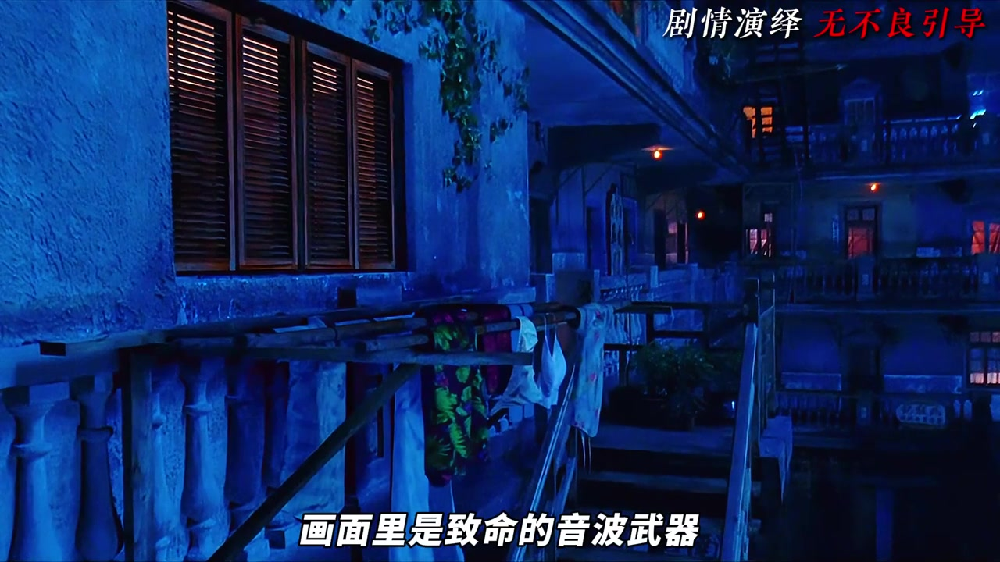
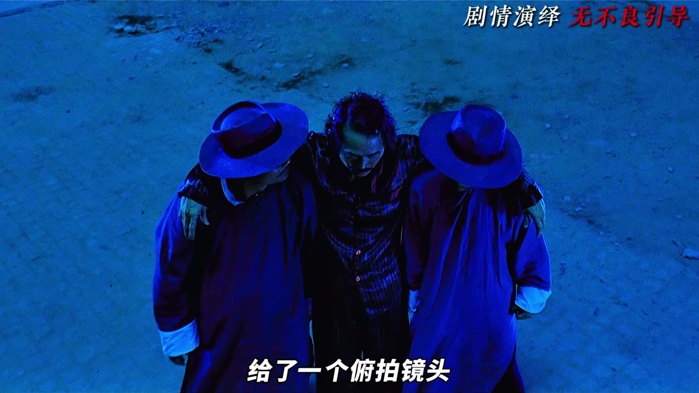
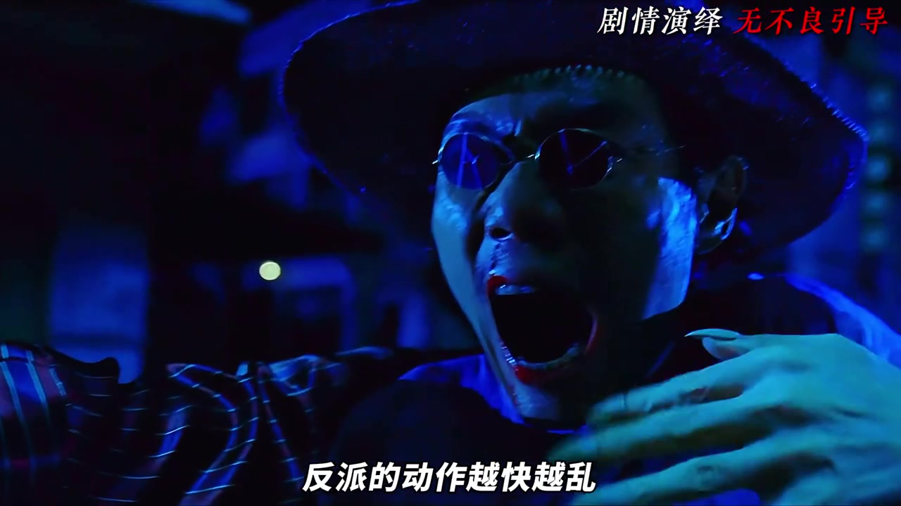
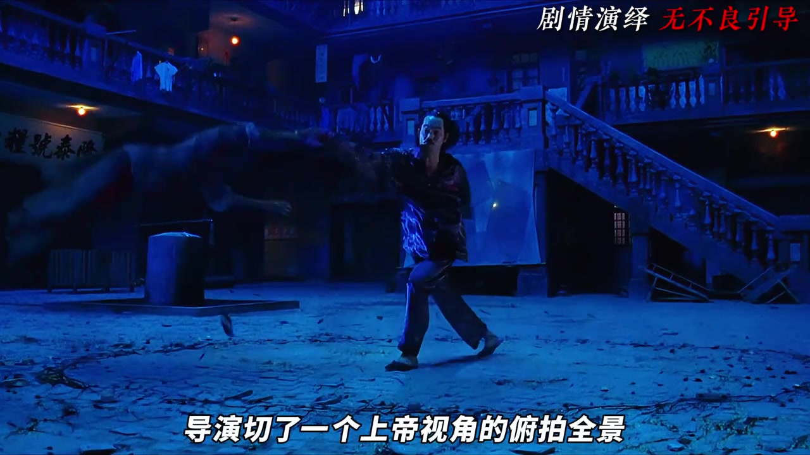
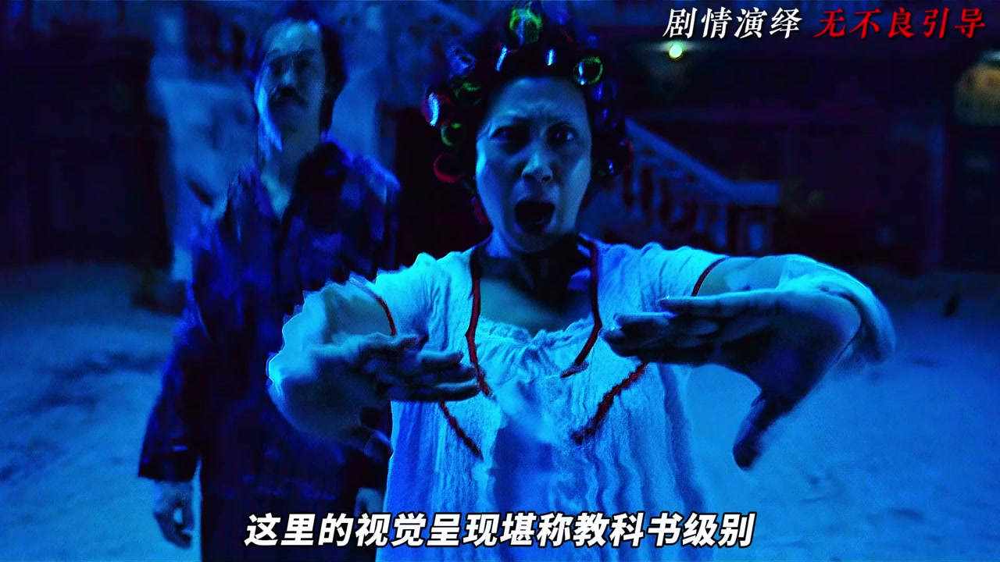
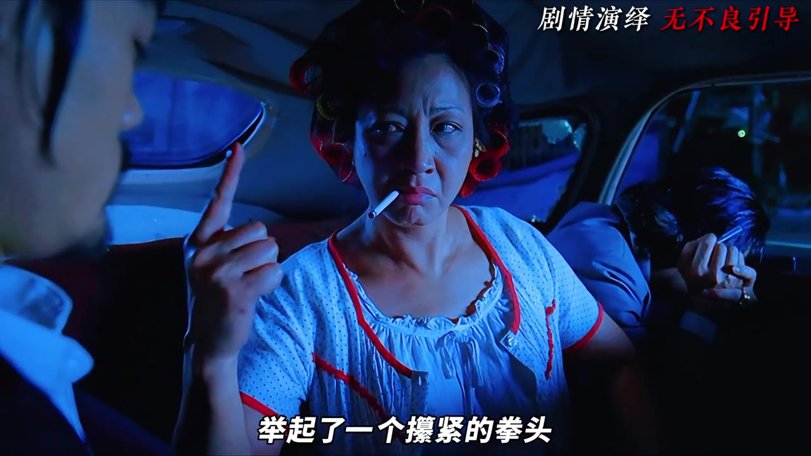
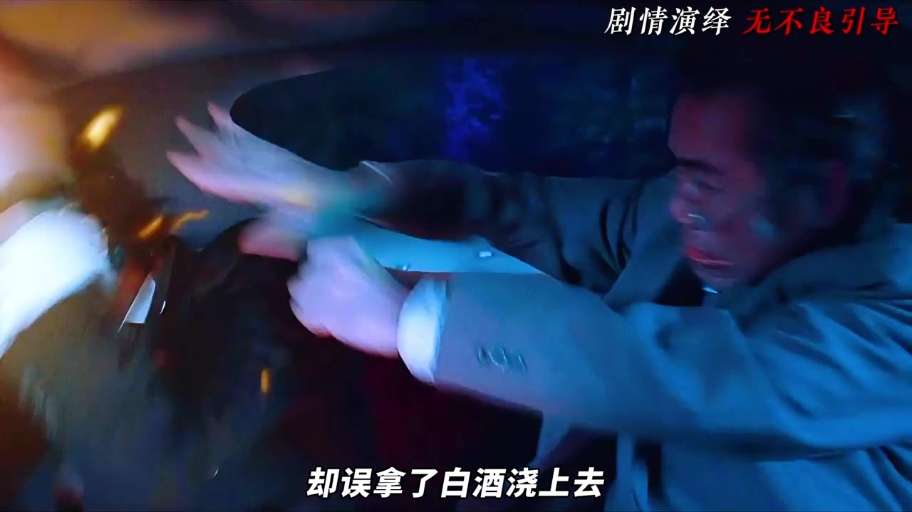
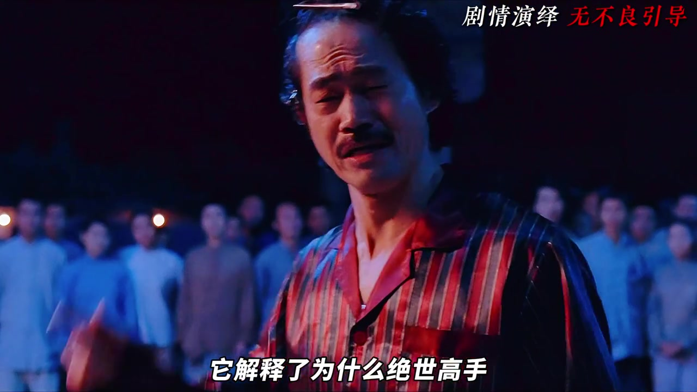

高手还没露面，声音先把局面翻了过来
五月开场先问：导演怎样只用几秒，把天残地缺占尽上风的屠杀，反转成“隐藏高手”的降维打击？视频没有先从招式讲起，而是把注意力放到声画关系上。画面仍停在音波武器造成的杀机里，一阵来自画外的尖笑却先震断琴弦。包租婆没有立即得到特写，力量反而因为看不见来源而显得更难估量。

随后镜头抬高，一双手从画外压进画内，按住准备起跳的两名反派。视频把这种安排概括为“画外空间的绝对压制”：不是靠更快的动作证明强弱，而是让角色连完整进入画面、展开动作的机会都没有。

不靠碎剪：让静的一方吞掉快的一方
进入包租公的对打段落后，视频把焦点转到长镜头、慢动作和动静对比。天残地缺从两侧快速进攻，包租公处在视觉中心，只以低头、侧身等小幅动作应对。叙述者的判断是：反派越快、越乱，中心人物越显得从容；力量并不是由挥拳幅度表现，而是由两组运动之间的差额表现。

腿部攻击出现时，叙述者又提醒听音效：没有拳脚碰撞的硬响，反而像踩进棉花。抽象的“内力化解”因此有了可听见的质感。包租公反击后，环绕推轨镜头跟着旋转动作走；当两名对手被带倒，俯拍全景让地面的运动痕迹呈现太极图般的形状。这里的重点不只是招式好看，而是动作结果被留在物理空间里。

从冷暖转场到狮吼功：宏大一秒后就跌进滑稽
战斗暂时切进屋内。外面的冷色月光换成昏黄、压抑的暖光，裁缝死去，包租婆的脸部特写把情绪从兴奋推向悲壮。天残地缺再以琴音制造披甲的骷髅音兵；视频将其理解为用西方奇幻视觉包装东方武侠概念。包租婆吸气的时间被故意拉长，悬念先积满，狮吼功才爆发。

紧接着，音兵和衣物都被震碎。前一秒还是“神仙打架”，后一秒反派只剩破烂内衣。叙述者把这一跳称作把崇高瞬间解构为荒诞：高潮没有被取消，而是在观众刚接受其宏大时，突然换成羞窘和笑声。
镜头转进车厢，拳头比狠话更有效
场景换到封闭车厢，动作也几乎停了。司机和师爷的反应镜头依次出现，包租公、包租婆像不速之客一样突然占据前后座。视频借“库里肖夫效应”和惊悚片式封闭空间来解释这段喜剧：极度安静、位置突变、人物互看，让观众先补出危险。
师爷递烟讨好，包租婆没有放狠话，只举起攥紧的拳头。斧头帮老大流汗、点头，强弱关系便完成结算。这里与前面的宏大特效正相反：信息越少，压迫越集中。

雪茄、头发和白酒，把紧张一层层泄掉
离开城寨后，斧头帮老大想抽雪茄压惊，师爷却点着了他的头发；找水灭火时又拿错白酒，火势更大。视频把这串道具事故总结为“祸不单行”，并解释它在节奏上的位置：前面有高强度打斗，也有车内持续压迫，观众需要一个泄压口，于是黑帮老大的狼狈成了集中释放。

笑声退下后，隐藏高手也有不愿出手的旧伤
画面再转回城寨，低照度与阴影把情绪拉回谷底。阿珍质问包租公夫妇为何不早点出手，二人说起儿子因比武而死的往事，并以“冤冤相报何时了”解释退隐。叙述者把这段视为主题落点：绝世高手伪装成市井小民，不只是喜剧设定，也与他们对江湖循环伤害的恐惧相连。

阿鬼临终时说出“能力越大，责任就越大”，随后又冒出英文，包租婆让他还是说中文。视频把这个突然的跨文化笑点视为周星驰悲喜剧内核：用荒诞消解死亡的沉重，却没有让悲伤消失，反而给小人物的告别留下一点苦中作乐。
说明：本文按视频推进记录创作者的镜头解读。涉及“库里肖夫效应”“低照度摄影”等术语，属于视频中的分析性表述；Whisper 原始转录可能含人名、术语和同音字误差，完整分段保留在下方。